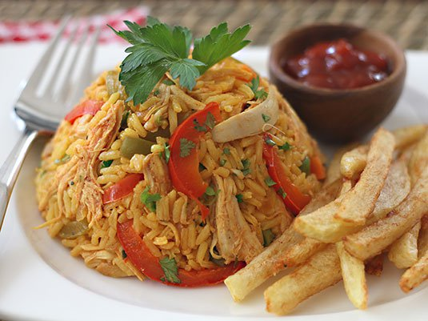

Chicken Rice

Description
Rice with chicken is one of the most popular dishes in Colombia and Latin America, but each country has its own way of preparing it and depending on the family, each recipe is different.
Today I'm sharing my mom's chicken rice recipe.
Ingredients
- 2 bone-in, skinless chicken breasts
- 1 long onion
- ½ white onion
- 2 cloves of garlic
- ½ tablespoon ground cumin
- ½ tablespoon Sazón with saffron
- 1 bay leaf
- Salt and pepper
- 2 tablespoons olive oil
- ½ cup chopped onion
- 1 clove of garlic, minced
- ½ cup chopped red pepper
- ½ cup chopped green pepper
- 1 cup white rice
- 1 tablespoon tomato paste
- 1 tablet of chicken broth
- 2 ½ cups chicken broth
- ½ tablespoon Sazón with saffron
- ½ cup chopped fresh cilantro
- ½ cup frozen peas
- ½ cup diced carrots
- ½ cup frozen green beans, diced
Steps
-
Place chicken breast, 5 cups water, and remaining broth ingredients in a medium pot. Bring to a boil, cover and lower the heat to medium-low. Cook for 20 to 25 minutes. Turn off the heat and leave the chicken in the pot for about 15 minutes, covered. Let cool, shred and reserve.
-
Strain the chicken broth and measure 2 and ½ cups and set aside. In a medium pot, heat the olive oil over medium-high heat. Add the onion, green pepper, garlic and red pepper. Cook until onion is translucent, about 4 to 5 minutes.
-
Add the rice, tomato paste, chicken broth and seasoning. Stir until the rice is well coated, about 3 minutes. Add the chicken broth and bring to a boil. Then, reduce the heat to low.
-
Cover and simmer for about 15 minutes. Add the peas, carrots and beans and cook for 7 more minutes, add the chicken and chopped cilantro, mix well with a fork, cover and cook for 5 more minutes.